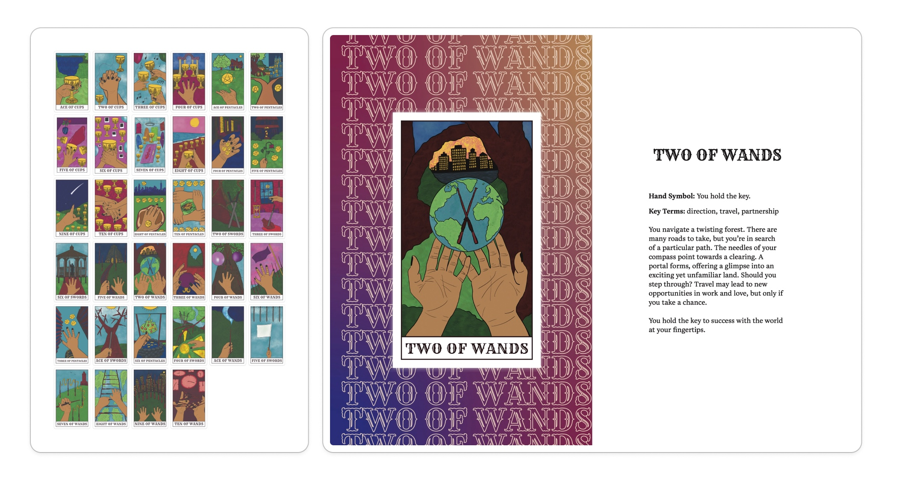

Thesis Weekly Update #8
March 25, 2024: Progress Presentation
Progress Reflections and Moving Forward
During Demo Day, I offered a tarot reading for the faculty reviewing my project. The three faculty members each drew a card for the Past/Present/Future 3-card layout. While this wasn’t a typical querent reading, which is typically 1 reader and 1 querent, I thought it was a fun exercise to include everyone in the reading. I thought that they became more interested in the reading when we reached the 2 of Swords in the Future placement, as the card is a good example of how a reader’s intuition can influence the interpretation of a layout. I also felt that it was an organic way to demonstrate how novice readers can refer back to the booklet if they need a helping hand. While I thought the reading went okay, I didn’t get to fully convey the instructional design piece that has driven my work thus far. In the future, I’m hoping to open up my presentation with this lens and demonstrate how I’m using tarot as a case study of how learning design can enhance user engagement with card games.
The feedback I received from Demo Day was very helpful and has helped me narrow down what I’d like to focus on in the upcoming weeks. For the remainder of the semester, I will be focusing on developing a solid instructional guide for how novice readers can immediately read tarot in a layout. I’m deciding to do this, as opposed to drawing the remaining Major Arcana and Court cards, because a large aspect of learning tarot is learning by doing, which means learning by reading the cards regularly. If I can get novice readers to feel comfortable reading for others from the get go, then I will be hitting learning goals like independent interpretation and narrative storytelling. My hope is that this will shift learners away from rote memorization, which has been a significant barrier to mastering tarot.
After I have a working prototype of the instructional guide, I will be playtesting the cards and guide with people who have little to no experience reading tarot. I will use feedback to refine the guide and to assess other areas for improving the cards, especially for cards where the symbolism isn’t effective. In addition, I will be updating the fonts of the cards’ names to be more readable and refining the color palette to boost visual contrast. For the paper itself, I’ve gone through most of my process thus far and have added to literature for secondary research. I’m hoping to be in a good place to have a complete draft by our late April deadline.
Tarot Reading Instructional Guidance
As I was researching instructional design theories, I came across the ADDIE Framework, which is very helpful with designing course content. I decided to use this framework to pinpoint the exact reading workflow I'd like novice learners to go through, as well as the specific materials they'd find helpful. I jotted down my ideas for each phase of this framework: Analysis, Design, Development, Implementation, and Evaluation. This was super helpful for considering what I want novice learners to take away from this exercise, while also taking note of the skillsets they already bring to the table, as well as areas they may need more granular guidance on. By taking the time to walk through this framework, I realize that I will need to film a few short reading videos earlier on before I playtest this entire exercise. Additionally, I would like to design a simple 1-page worksheet that will walk readers through the individual steps of noticing and building a narrative from a standard 3-card Past/Present/Future reading.